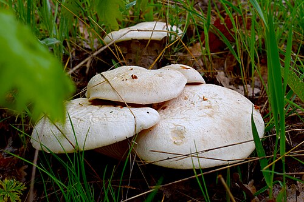
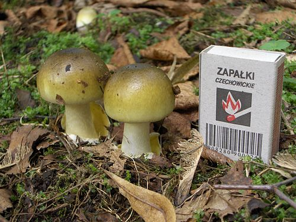
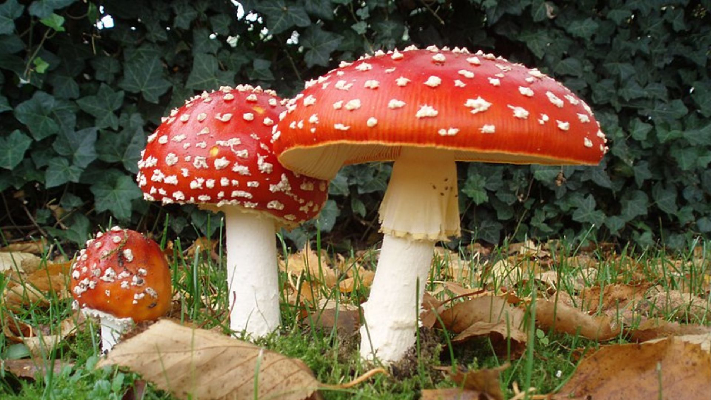

ABOUT
A mushroom is the fleshy, spore-bearing fruiting body of a fungus, typically produced above ground on soil or another food source. A toadstool generally refers to a poisonous mushroom.
The standard for the name "mushroom" is the cultivated white button mushroom, Agaricus bisporus; hence, the word "mushroom" is most often applied to those fungi (Basidiomycota, Agaricomycetes) have a stem (stipe), a cap (pileus), and gills (lamellae, sing. lamella) on the underside of the cap. "Mushroom" also describes a variety of other gilled fungi, with or without stems; therefore the term is used to describe the fleshy fruiting bodies of some Ascomycota. The gills produce microscopic spores which help the fungus spread across the ground or its occupant surface.
Identification
Identifying what is and is not a mushroom requires a basic understanding of their macroscopic structure. Most are basidiomycetes and gilled. Their spores, called basidiospores, are produced on the gills and fall in a fine rain of powder from under the caps as a result. At the microscopic level, the basidiospores are shot off basidia and then fall between the gills in the dead air space. As a result, for most mushrooms, if the cap is cut off and placed gill-side-down overnight, a powdery impression reflecting the shape of the gills (or pores, or spines, etc.) is formed (when the fruit body is sporulating). The color of the powdery print, called a spore print, is useful in both classifying and identifying mushrooms. Spore print colors include white (most common), brown, black, purple-brown, pink, yellow, and creamy, but almost never blue, green, or red
Classification
Typical mushrooms are the fruit bodies of members of the order Agaricales, whose type genus is Agaricus and type species is the field mushroom, Agaricus campestris. However in modern molecularly defined classifications, not all members of the order Agaricales produce mushroom fruit bodies, and many other gilled fungi, collectively called mushrooms, occur in other orders of the class Agaricomycetes. For example, chanterelles are in the Cantharellales, false chanterelles such as Gomphus are in the Gomphales, milk-cap mushrooms (Lactarius, Lactifluus)and russulas (Russula), as well as Lentinellus, are in the Russulales, while the tough, leathery genera Lentinus and Panus are among the Polyporales, but Neolentinus is in the Gloeophyllales, and the little pin-mushroom genus, Rickenella, along with similar genera, are in the Hymenochaetales.
Edible Mushrooms
Mushrooms are used extensively in cooking, in many cuisines (notably Chinese, Korean, European, and Japanese). Humans have valued them as food since antiquity.
Most mushrooms sold in supermarkets have been commercially grown on mushroom farms. The most common of these, Agaricus bisporus, is considered safe for most people to eat because it is grown in controlled, sterilized environments. Several varieties of A. bisporus are grown commercially, including whites, crimini, and portobello. Other cultivated species available at many grocers include Hericium erinaceus, shiitake, maitake (hen-of-the-woods), Pleurotus, and enoki. In recent years, increasing affluence in developing countries has led to a considerable growth in interest in mushroom cultivation, which is now seen as a potentially important economic activity for small farmers.
Toxic Mushrooms
Many mushroom species produce secondary metabolites that can be toxic, mind-altering, antibiotic, antiviral, or bioluminescent. Although there are only a small number of deadly species, several others can cause particularly severe and unpleasant symptoms. Toxicity likely plays a role in protecting the function of the basidiocarp the mycelium has expended considerable energy and protoplasmic material to develop a structure to efficiently distribute its spores.
  LEARN MORE
Learn more about different types of Mushrooms
Learn more about Cortinarius Neosanguineus